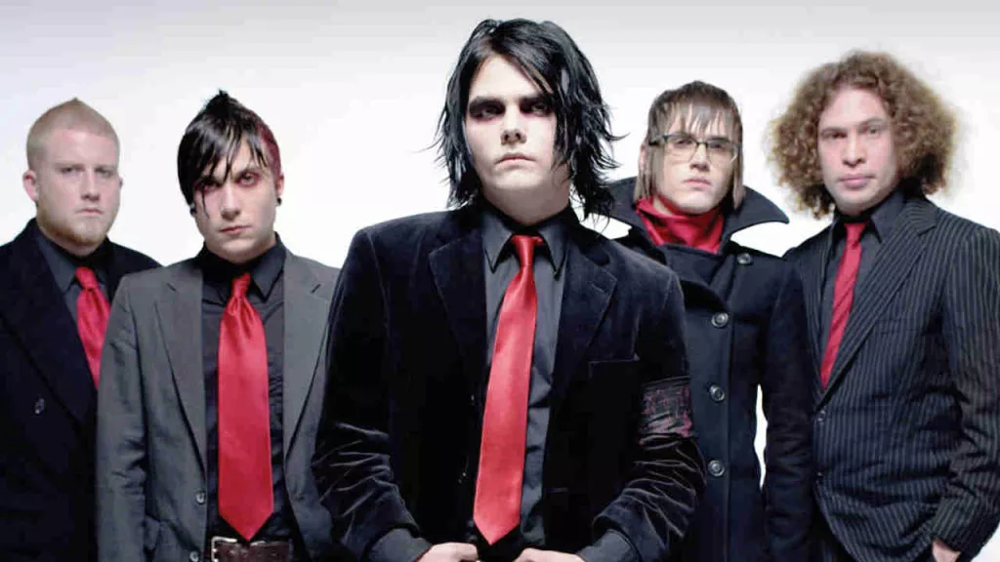

My Chemical Romance (de abreviação MCR) é uma banda de rock dos Estados Unidos formada em 2001 em Nova Jersey, integrada em maior parte de sua carreira pelo vocalista Gerard Way, o baixista Mikey Way e os guitarristas Ray Toro e Frank Iero. Seu estilo musical tem sido associado aos gêneros rock alternativo, pós-punk, pop punk, pós-hardcore e emocore. Entre as influências que citaram são diversos artistas, tais como MC5, Misfits e Black Flag. A crítica também disse que a essência da banda encontra-se no drama, e que durante sua carreira produziu "um rock and roll dos mais visceral e dramáticos na história recente".
Os integrantes são oriundos de Belleville e Kearny, Nova Jérsei. O nome da banda foi ideia do baixista Mikey Way, que retirou-o do livro "Ecstasy: Three Tales of Chemical Romance" de Irvine Welsh. Foram eleitos pela Revista Kerrang! a 5° banda mais influente dos últimos 30 anos. Em 31 de Outubro de 2019 a banda anuncia o seu retorno. Em 2008 o Blog do Portal MTV declarou que a banda possuía um dos maiores cachês para apresentações ao vivo, cobrando um mínimo de 150 mil dólares por show.
A banda foi formada pelo vocalista Gerard Way e pelo ex-baterista Matt Pelissier. A primeira canção escrita é Skylines and Turnstiles, escrita por Gerard, na qual ele fala sobre seus sentimentos sobre os Ataques terroristas de 11 de Setembro. Pouco tempo depois, Ray Toro, Mikey Way (irmão de Gerard) e Frank Iero se juntaram ao grupo.
Desde o começo, My Chemical Romance é caracterizado por uma estética escura e por letras que falam de morte, amor e problemas de relacionamento.
Gravaram seu primeiro álbum em 2002, I Brought You My Bullets, You Brought Me Your Love, pela Eyeball Records. O horror é um tema principal que apareceu neste álbum. 'Vampires Will Never Hurt You' é claramente baseado em um dos filhos favoritos das trevas, enquanto 'Our Lady Of Sorrows' e 'Headforst For Halos' contêm bastante lirismo arrepiante de sangue, tirado diretamente das profundezas do inferno. Todo o registro parece o equivalente em áudio de estar preso em um porão com apenas uma única lâmpada balançando lado a lado acima de você; terrivelmente real, mas também impossível de ignorar. Após o lançamento do CD eles iniciaram turnês com bandas como The Used, Thrice e Taking Back Sunday. Apesar de muitos não saberem, o visual usado pela banda neste álbum foi inspirado nas roupas da gangue de delinquentes liderada por Alexander Dellarge no filme Laranja Mecânica dirigido por Stanley Kubrick. Nos primeiros anos da banda abriram vários show de bandas como Green Day, Mindless Self Indulgence e The Used.
My Chemical Romance assinou um contrato com a gravadora Reprise Records em 2003 e começou a trabalhar em seu segundo álbum, Three Cheers for Sweet Revenge, lançado em 2004, e que rendeu ao grupo um disco de platina um ano depois (venda de mais de 2 milhões de copias). É considerado um álbum conceitual, uma continuação de uma das músicas do primeiro álbum da banda, Demolition Lovers, que conta a história de um casal fora-da-lei morto em um tiroteio. Ele acaba no Purgatório, e o único meio de chegar até ela é voltar a Terra e matar mil homens maus. Do álbum resultaram três singles, I'm Not Okay (I Promise), Helena e The Ghost of You.
Desde o lançamento, eles mostraram a importância do Vans Warped Tour, foram destaque do primeiro Taste of Chaos Tour e também abriram a apresentação de Green Day na turnê American Idiot. Em 2005 foram destaque do Vans Warped Tour 2005, e também de sua primeira turnê com o Alkaline Trio. My Chemical Romance e The Used trabalharam juntos em um cover de "Under Pressure", que foi lançada em impressões posteriores do álbum In Love and Death, do The Used. A canção foi gravada para um álbum que tinha como objetivo arrecadar fundos para ajudar as vítimas do Tsunami de 2004.
My Chemical Romance começou trágico. O primeiro álbum fala sobre amor impossível, impulsos suicidas e mortes horríveis. As músicas são as mais hardcore da carreira da banda (Gerard Way chega a arriscar um vocal à screamo), e também algumas das mais melancólicas.
O disco conta a história de um casal apaixonado que acaba brigando, mas o mocinho faz de tudo para conquistar a mocinha. No final, ambos estão querendo se suicidar e acabam morrendo em um tiroteio e indo para o purgatório.
As faixas de destaque são “Honey, This Mirror Isn’t Big Enough for the Two of Us”, “Vampires Will Never Hurt You” e “Demoliton".
O homem do álbum anterior acorda no purgatório apenas para descobrir que sua amada está viva. Ele só pode vê-la novamente se voltar à Terra e matar mil homens maus.
As letras seguem na linha dramática sobre desencontros amorosos e tristeza profunda - mas, desta vez, com muito mais raiva. O som deixa um pouco o hardcore e vai mais de encontro a um rock alternativo.
Foi o disco que lançou o My Chemical Romance ao estrelato. Conta com os clássicos da banda “Helena", "I’m Not Okay (I Promise)" e "The Ghost of You".
Desta vez, a morte vai a um significado mais profundo. O álbum conta toda a vida de um homem doente que está morrendo de câncer, e sabe que está desaparecendo do mundo, o que o faz pensar profundamente sobre sua vida.
A música é radicalmente diferente dos discos anteriores. Mais suave, mais lírica, menos revoltada, mais calma. Foi o disco que consagrou a banda como clássico emo.
Considerados por muitos como o melhor álbum do grupo, teve cinco singles: "Welcome To The Black Parade", "Dead!", "Famous Last Words", "I Don’t Love You" e "Teenagers". Mas outras músicas de destaque do disco são “The Sharpest Lives”, "Cancer", "Mama" e "Blood".
My Chemical Romance teve uma das mudanças mais radicais em bandas com este álbum. Deixando a melancolia e todo o hardcore para lá, Danger Days só pode ser descrito como dançante.
Pela primeira vez, a morte não é o tema principal. O disco conta a história de quatro “killjoys”, personagens vividos pelos integrantes. Os meninos fazem parte de uma vendeta contra a corporação Better Living Industries. Os quatro precisam destruir a companhia, e para isso contam com a ajuda do Dr. Death Defying, que os orienta através de uma rádio pirata. Na verdade, a estética do novo álbum não estaria deslocada em um episódio de Power Rangers, nem as músicas.
Os singles foram "Na Na Na (Na Na Na Na Na Na Na Na Na)", "The Only Hope For Me Is You", "SING", "Planetary, Go!", "Bulletproof Heart" e "The Kids From Yesterday".